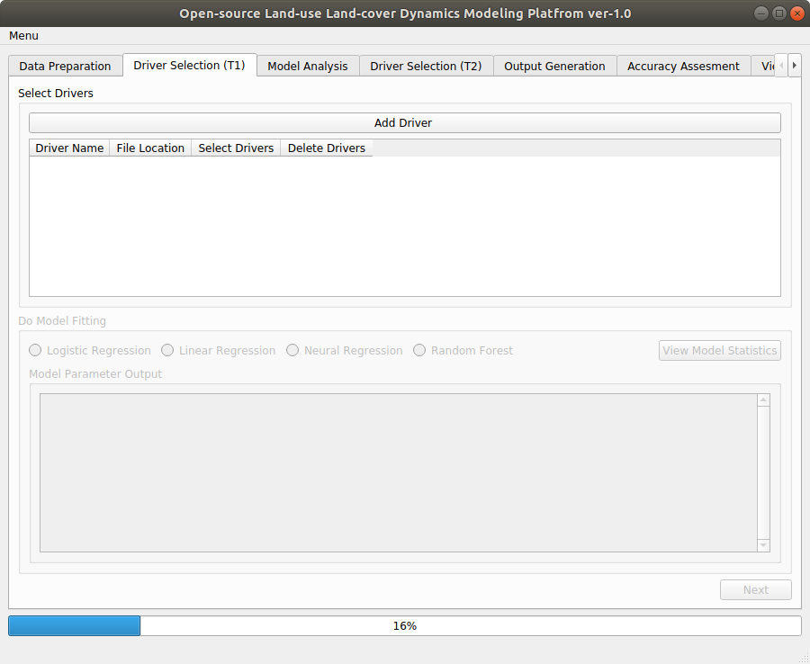
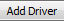
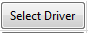
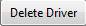
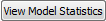

After Clicking on  in Data Preparation tab we will get following screen.
in Data Preparation tab we will get following screen.

Figure 9
Minimum three drivers are necessary for the modeling. For logistic modeling we will use four drivers. To add these perform actions as given in Table 3.
Table 2
Field |
Action |
Select Drivers |
Click on . |
Driver Name |
Type in DistanceToStream |
File Location |
Click on  and browse to examples\Drivers\Drivers85\ and select distanceToStream85. |
Delete Driver |
In case of deleting a row from driver list click on . It will delete the last row from Select Drivers. |
Driver Name[2-4] |
Repeat above steps for other fours drivers namely DistanceToBuildup, DistanceToRoad and Elevation by browsing to specific location and selecting file |
Do Model Fitting |
Select and click on * |
* View Model Statistic button gets enabled only after selecting on of the three modeling technique.
(OpenLDM) v1.0 IIRS